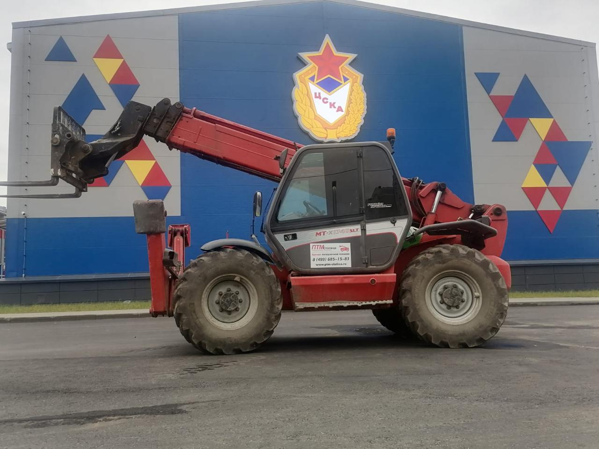

Дополнительная информация
-

Ознакомьтесь с производителем Toyota
Вернуться назад
О производителе Toyota
В Советском Союзе, а затем и России, накоплен значительный опыт эксплуатации погрузчиков Toyota. Эти погрузчики наилучшим образом учитывают специфику работы в наших отечественных условиях. В связи с этим подавляющее большинство погрузчиков, эксплуатируемых сегодня в России, имеют марку Toyota.
Достоинства погрузчиков Toyota
- Синхронизация прохождения поворота, исключающая опрокидывание и занос;
- Стабилизация положения задней оси с помощью дополнительного гидроцилиндра и специального устройства слежения, гарантирующая касание пола всеми четырьмя колесами погрузчика;
- Автоматизированное управление углом наклона мачты вперед и скоростью наклона назад, обеспечивающее надежность захвата груза;
- Гидравлический замок, не допускающий опускание вил при выключенном двигателе;
- Устройство поддержания давления в гидросистеме для обеспечения постоянной работоспособности;
- Автоматизированное управление установкой вил в горизонтальное положение, облегчающее работу оператора;
- Комплекс датчиков, контролирующих техническое состояние узлов погрузчика; звуковая и световая индикация неисправностей.

Достоинства штабелеров Toyota
- Признанный лидер в производстве складской техники для подъемно-транспортных работ - Toyota Industrial Equipment - производит целую гамму штабелеров, предназначенной для проведения подъемно-транспортных работ.
- Только ручных самоходных штабелеров типа Stacker производится около десятка видов. При этом каждая модель выпускается в различных модификациях. Конструкция мачты и высота подъема груза, емкость зарядного устройства, материал и количество опорных ходовых колес, длина вил, кнопки управления для правши и левши, дополнительные приборы - все может быть учтено при комплектации заказа.
- В настоящее время выпускается новое поколение штабелеров. Их конструкция учитывает все современные требования, а также накопленный опыт эксплуатации выпускаемых ранее штабелеров. При снижении габарита по высоте клиренс увеличен на 25%. Улучшены характеристики, влияющие на производительность: скорости передвижения штабелера, подъема и опускания груза. Увеличился максимальный угол преодолеваемого подъема. Теперь штабелер легко проходит по более узким проездам и способен маневрировать на участках с малым радиусом поворота. Выпускаемые в настоящее время модели еще более приспособлены для работы на складах с увеличенной высотой стеллажей и в стесненных условиях.
- Повышены меры безопасности. Рукоять управления снабжена кнопкой, которая при движении задним ходом в случае возможного прижатия оператора к стене, не только отключает ходовой двигатель, но и включает реверс. Звуковой сигнал является базовой комплектацией для всех моделей.
Все перечисленный особенности делают штабелеры Toyota незаменимыми для обработки грузов на поддонах в крытых стеллажных складах.